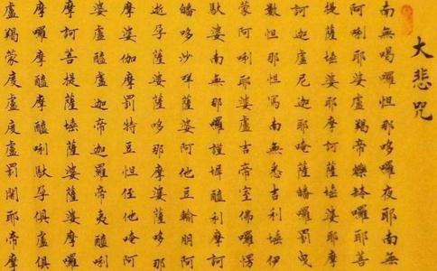

诵持
这个人就是光明藏 ， 因为一切如来都用光明来照摄你，让你现出种种的光明。
这个人就是慈悲藏 ， 因为你常常用陀尼来救 护一切众生，使一切众生都离苦得乐，灾消病散， 罪灭福生。
这个人就是妙法藏 ， 因为大悲咒能够普摄一切 诸陀罗尼门，你诵持大悲 咒，就把一切的妙法都收摄到一起了。
你诵持大悲咒，就是
这个人就是
这个人就是
这个人就是妙语藏 ， 这个大悲咒就是不可思议的妙语，你一天到晚嘴里的大悲咒都不停，随时随地，有空就念，多多益 善，利益人天。
这个人就是
你念大悲咒，你就是
这个人就是药王藏 ， 能用大悲咒为众生治疗各种病。
有人说，要到什么程度才可以为别人
1、你自己的业障消得越多，你为别人治病效果就越好，最好是你自己业障全消了再去为别人治病。
2、你为人治病，发心要正确，不要一味的希望病人早日康复，不要一味的要求病人的怨亲债主早日解怨释结，这个并不恰 当。而是应当坚持长期为病人的怨亲债主回向，直到他们满意为止，他们满意了，自然就会离开了， 他们离开了，病就容易好了。
3、你如果为人治病，就要有这个心理承受能力， 那个病人的病痛转移到你身上，让你来承受这个病 痛之苦。如果你没有这个承受能力，那就不建议你随便为人治病。
再说说病人 有句话叫做可怜之人，必有可恨之处。这个病人之所以受病痛之苦， 自然是这一世或者前世做过坏事。那么这个病人如果能够深信因果，真诚发心忏悔，愿意接受病痛的惩罚，同时愿意通过念大悲咒等方式做功德回向给怨亲债主，那么病就容易早日康复。你在这个基础上去帮他，就会事半功倍，这个叫做治标治本。 如果这个病人还是本性不改，只是希望逃避病痛的 惩罚，自己还没有真诚的忏悔心，那么你帮他，叫 做事倍功半，往往吃力不讨好。搞不好还让别人对
自助者天助。你自己发真诚心依据
我们精进群的师兄修大悲咒，应当至少先把自己的身体给治好了，这样才有说服力。 希望大家先老老实实念三年，把自己的身体变得越来越健 康，用事实说话，让家人看到佛法的好处。
这个人就是
你在闲净的地方， 也就是悠闲清净的地方， 先念大悲咒来结界，然后 对你的衣服念 108 遍大悲 咒，对你喝的水也念 108 遍大悲咒再喝，把食物 也念 108 遍大悲咒再吃， 把香也念 108 遍大悲咒再 点，如果吃药，也先念 108 遍大悲咒之后再服 用，这样的话，你就一定 可以长命。
如果是弘扬佛法需要你多活几年，那还可 以，否则的话，你当然是去极乐世界更愉快，谁愿意没事呆在这个
原文：
诵持此陀罗尼者， 当知其人即是佛身藏，九 十九亿恒河沙诸佛所爱惜 故。
当知其人即是光明藏，一切如来光明照故。
当知其人是慈悲藏，恒以陀罗尼救众生故。
当知其人是妙法藏，普摄一切诸陀罗尼门故。
当知其人是禅定藏，百千三昧常现前故。
当知其人是虚空藏，常以空慧观众生故。
当知其人是无畏藏，龙天善神常护持故。
当知其人是妙语藏，口中陀罗尼音无断绝故。
当知其人是常住藏，三灾恶劫不能坏故。
当知其人是解脱藏，天魔外道不能稽留故。
当知其人是药王藏，常以陀罗尼疗众生病故。
当知其人是神通藏，游诸佛国得自在故。
善男子。若复有人。厌世间苦。求长生乐者。在闲净处。清净结界。咒衣着。若水。若食。若香。若药。皆咒一 百八遍服。必得长命。
经文出自：
南无本师
南无本师释迦牟尼佛
南无本师释迦牟尼佛